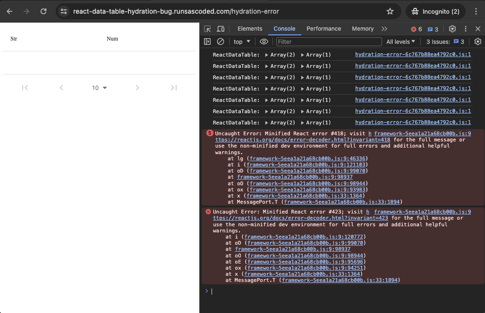
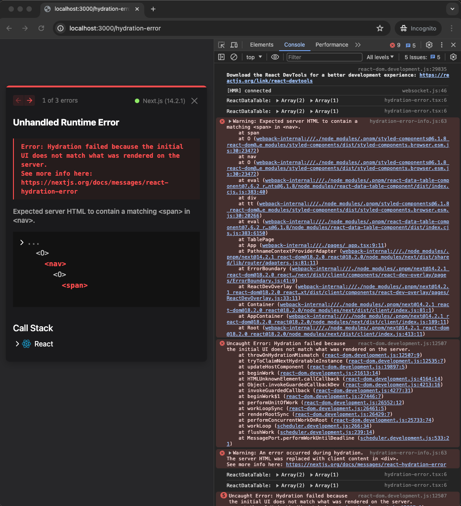

react-data-table-hydration-bug
Repro of a hydration error in react-data-table-component's Pagination element.
When the client window width is < 599px or undefined (as during SSR), "rows per page" in the pagination footer is omitted. This causes a hydration error whenever the client window width is ≥599, as it is omitted on the server but rendered on the client.

Hydration error iff window.innerWidth < 599
Live demo
react-data-table-hydration-bug.runsascoded.com was built and deployed via GitHub Actions, and the error is visible in the dev console:

import DataTable from "react-data-table-component";
import ReactMarkdown from "react-markdown";
import fs from "fs";
export function getStaticProps() {
return { props: { readme: fs.readFileSync("README.md").toString() } }
}
const Index = ({ readme }: { readme: string }) =>
<div className={"markdown-body"}>
<ReactMarkdown>{readme}</ReactMarkdown>
<hr />
<DataTable
columns={[ { name: "Str" }, { name: "Num" } ]}
data={[ { Str: "A", Num: 1 } ]}
// This line causes a hydration error in the pagination footer "nav" element (iff the
// browser window is ≥599px wide); commenting this line fixes it.
pagination
/>
</div>
export default Index
The error in the dev console links to react#418:
Uncaught Error: Minified React error #418; visit https://reactjs.org/docs/error-decoder.html?invariant=418 for the full message or use the non-minified dev environment for full errors and additional helpful warnings.
at lg (framework-5eea1a21a68cb00b.js:9:46336)
at i (framework-5eea1a21a68cb00b.js:9:121103)
at oD (framework-5eea1a21a68cb00b.js:9:99070)
at framework-5eea1a21a68cb00b.js:9:98937
at oO (framework-5eea1a21a68cb00b.js:9:98944)
at ox (framework-5eea1a21a68cb00b.js:9:93983)
at x (framework-5eea1a21a68cb00b.js:33:1364)
at MessagePort.T (framework-5eea1a21a68cb00b.js:33:1894)
Local repro
Local dev mode gives more details about the error (namely that it occurs in a hierarchy like <nav>…<span> in the pagination footer):
git clone https://github.com/ryan-williams/react-data-table-hydration-bug && cd react-data-table-hydration-bug
pnpm install
npm run dev
localhost:3000 will show something like:

Error text:
Unhandled Runtime Error
Error: Hydration failed because the initial UI does not match what was rendered on the server.
See more info here: https://nextjs.org/docs/messages/react-hydration-error
Expected server HTML to contain a matching <span> in <nav>.
...
<O>
<nav>
^^^^^
<O>
<span>
^^^^^^
Commenting out the pagination property avoids the issue; react-data-table-component#649 and this StackOverflow describe the same.